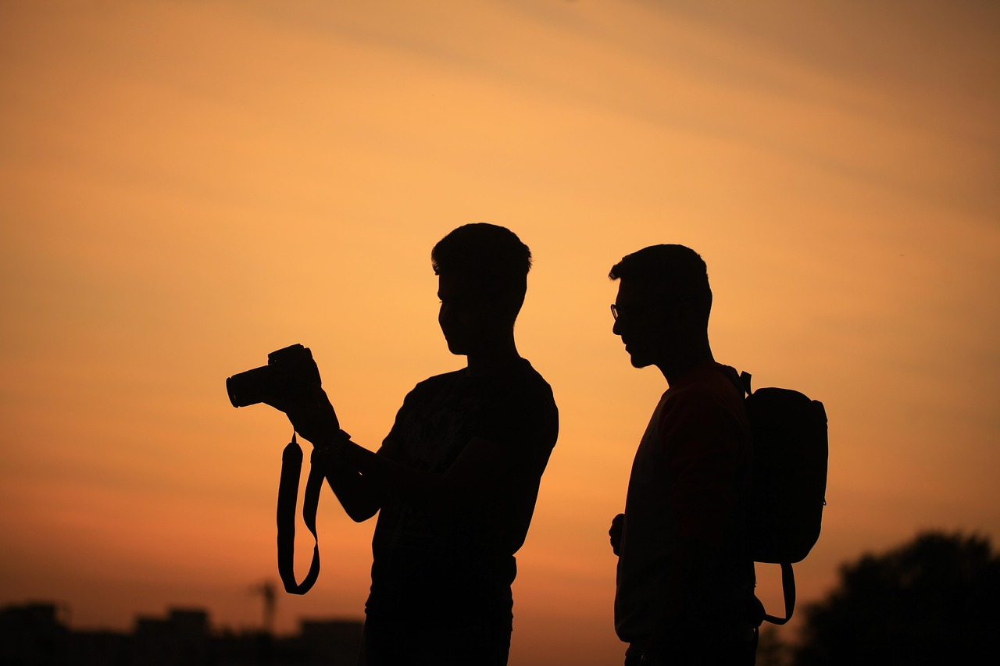
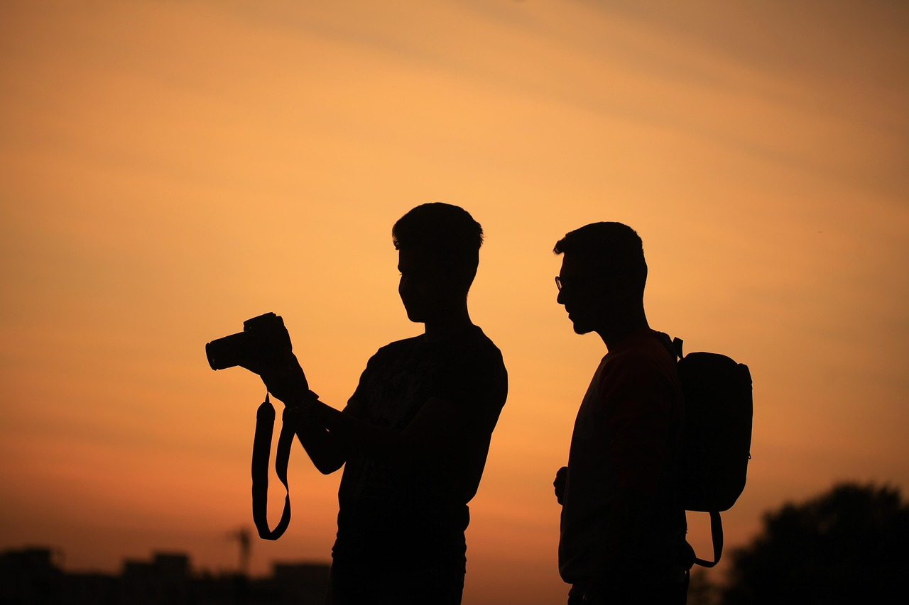

About Me :
Hello! I’m Bavi, a passionate lifestyle and travel photographer with an eye for storytelling through the lens. I believe every frame holds emotion, light, and a timeless story waiting to be captured.
Download CV
Hello! I’m Bavi, a passionate lifestyle and travel photographer with an eye for storytelling through the lens. I believe every frame holds emotion, light, and a timeless story waiting to be captured.
Download CV
 

I combine creativity with precision to deliver powerful visual narratives. My core photography strengths include:
Exploring the charm of toy cameras – their imperfections add soul and nostalgic character to each shot.
Capturing raw emotion is at the heart of my photography—this recent series explores solitude and silence.
Have a photoshoot idea, collaboration request, or just want to chat about photography? Reach out below!
Instagram : @bavi_photography
LinkedIn : @bavi_photography